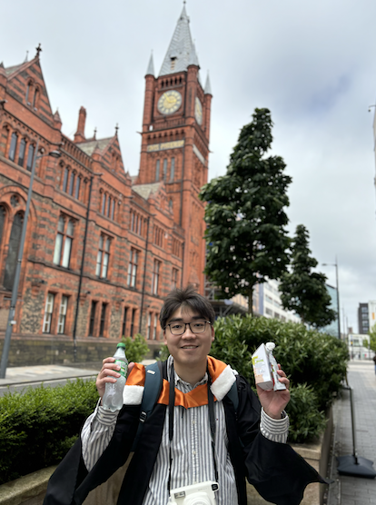

About
HEY EVERYONE! I’M A FINAL-YEAR STUDENT BASED IN LIVERPOOL, GETTING READY TO WRAP UP MY STUDIES IN 2024. MY FOCUS HAS BEEN ON COMPUTER SCIENCE AND ELECTRICAL ENGINEERING IN U OF LIV MAIN CITY CAMPUS. I’M PARTICULARLY EXCITED ABOUT MY NEXT STEP: JOINING GEORGIA TECH’S CSE PROGRAM. LIVERPOOL HAS SHAPED ME WITH ITS VIBRANT ENVIRONMENT & CULTURE, AND I CAN’T WAIT TO SEE WHERE THIS JOURNEY TAKES ME NEXT.
MANY MANY THX FOR XJTLU AND U OF LIV.

I AM TRULY GRATEFUL FOR ALL THE LUCKY OUTCOMES OF THE PAST, CHEERS TO THE FUTURE :)